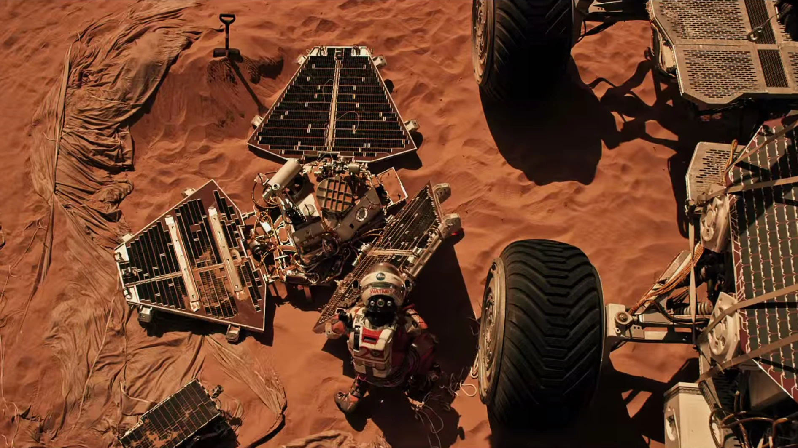

Mars Pathfinder
Mars Pathfinder a fost o misiune spațială lansată de NASA pentru a explora suprafața planetei Marte.
Misiunea a avut un caracter dual, combinând o sondă statică, numită Stația de Bază Pathfinder, și un rover activ numit Sojourner.
Lansarea a avut loc la 4 decembrie 1996, iar aterizarea pe Marte a avut loc la 4 iulie 1997.
Misiunea a avut ca scop studierea atmosferei, climei și geologiei planetei roșii.
Componente ale Misiunii
1. Sonda Stație de Bază (Pathfinder)
Scop: Colectarea de date meteorologice și geologice de pe suprafața lui Marte.
- Instrumente științifice:
- MeteoSojourner: Stație meteorologică pentru măsurarea temperaturii, presiunii atmosferice, vântului și umidității.
- Imagerul Sojourner: Cameră care a furnizat imagini de înaltă rezoluție a suprafeței marțiene.
- Realizări:
- A fost prima misiune care a folosit tehnologia airbag pentru a ateriza pe Marte, un proces inovator la vremea respectivă.
- Stația a furnizat date importante despre atmosfera marțiană și a rezistat mult peste durata sa de viață planificată.
2. Roverul Sojourner
Scop: Explorarea directă a suprafeței lui Marte și colectarea de date geologice.
- Instrumente științifice:
- Alfa Proton X-ray Spectrometer (APXS): Pentru analiza compoziției chimice a rocilor.
- Imagerul cu raze alpha: Pentru a obține imagini detaliate ale rocilor.
- Rover Wheel Abrasion Experiment (RWAE): Pentru a măsura abraziunea cauzată de particulele de praf pe roți.
- Realizări:
- Sojourner a fost primul rover care a explorat o altă planetă și a avut o durată de viață semnificativă, operând timp de 83 de zile marțiene.
- A adunat date esențiale despre compoziția rocilor și a oferit imagini detaliate ale peisajului marțian.

Impactul Misiunii
- Avansarea Tehnologiei: Mars Pathfinder a introdus tehnologii noi și inovatoare, inclusiv folosirea airbag-urilor pentru a ateriza pe Marte și designul roverului Sojourner pentru explorarea directă.
- Influența asupra Misiunilor Următoare: Succesul Pathfinder a deschis calea pentru misiuni ulterioare pe Marte, inclusiv roverele Spirit, Opportunity și Curiosity.
- Contribuția la Cunoașterea Marției: Datele colectate au oferit informații cruciale despre atmosfera, clima și geologia Marte, contribuind semnificativ la înțelegerea planetei roșii.
Concluzii
Mars Pathfinder a fost o misiune pionieră, deschizând calea pentru explorarea robotică a planetei Marte. Prin combinarea cu succes a unei stații de bază statice și a unui rover activ, misiunea a furnizat date cruciale și a stabilit bazele pentru misiuni viitoare. Impactul său asupra tehnologiei spațiale și a cunoașterii despre Marte rămâne semnificativ și continuă să influențeze explorarea spațială contemporană.